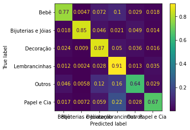

Acquiring the data¶
[1]:
from src.client import ConfigClient, DataClient
# Build configurations
configs = ConfigClient(["config"]).build()
# Get a data client
client = DataClient(configs=configs)
[2]:
import pandas as pd
from datetime import datetime
# Get the products data
products_df = client.products_df
products_df.head()
[2]:
| product_id | seller_id | query | search_page | position | title | concatenated_tags | creation_date | price | weight | express_delivery | minimum_quantity | view_counts | order_counts | category | |
|---|---|---|---|---|---|---|---|---|---|---|---|---|---|---|---|
| 0 | 11394449 | 8324141 | espirito santo | 2 | 6 | Mandala Espírito Santo | mandala mdf | 2015-11-14 19:42:12 | 171.890000 | 1200.0 | 1 | 4 | 244 | NaN | Decoração |
| 1 | 15534262 | 6939286 | cartao de visita | 2 | 0 | Cartão de Visita | cartao visita panfletos tag adesivos copos lon... | 2018-04-04 20:55:07 | 77.670000 | 8.0 | 1 | 5 | 124 | NaN | Papel e Cia |
| 2 | 16153119 | 9835835 | expositor de esmaltes | 1 | 38 | Organizador expositor p/ 70 esmaltes | expositor | 2018-10-13 20:57:07 | 73.920006 | 2709.0 | 1 | 1 | 59 | NaN | Outros |
| 3 | 15877252 | 8071206 | medidas lencol para berco americano | 1 | 6 | Jogo de Lençol Berço Estampado | t jogo lencol menino lencol berco | 2017-02-27 13:26:03 | 118.770004 | 0.0 | 1 | 1 | 180 | 1.0 | Bebê |
| 4 | 15917108 | 7200773 | adesivo box banheiro | 3 | 38 | ADESIVO BOX DE BANHEIRO | adesivo box banheiro | 2017-05-09 13:18:38 | 191.810000 | 507.0 | 1 | 6 | 34 | NaN | Decoração |
Processing data¶
[3]:
# Feature and label columns
label_col = 'category'
feature_cols = products_df.columns.tolist()
feature_cols.remove(label_col)
# Build label and features dataframes
labels, features = products_df[label_col], products_df[feature_cols]
[4]:
from sklearn.model_selection import train_test_split
# Segregate train and test data
X_train, X_test, y_train, y_test = train_test_split(
features, labels, test_size=0.3, random_state=30, stratify=labels)
Process features¶
[5]:
from src.pipe.base import (TextProcessing,
DateProcessing,
OverallProcessing)
from sklearn.pipeline import Pipeline
from sklearn.feature_extraction.text import CountVectorizer
from sklearn.preprocessing import StandardScaler
from sklearn.decomposition import PCA
# Creating the data processing pipeline
pipe = Pipeline([
("text_processing", TextProcessing()),
("date_processing", DateProcessing()),
("overall_processing", OverallProcessing()),
("dimension_reduction", PCA(n_components=250)),
("starndarization", StandardScaler()),
], verbose=True)
[6]:
X_ = pipe.fit_transform(X_train.copy())
[Pipeline] ... (step 1 of 5) Processing text_processing, total= 9.0s
[Pipeline] ... (step 2 of 5) Processing date_processing, total= 3.7s
[Pipeline] (step 3 of 5) Processing overall_processing, total= 0.8s
[Pipeline] (step 4 of 5) Processing dimension_reduction, total= 1.2min
[Pipeline] ... (step 5 of 5) Processing starndarization, total= 0.1s
Processing labels¶
[7]:
from sklearn.preprocessing import LabelEncoder
le = LabelEncoder()
y_ = le.fit_transform(y_train)
Resample data¶
[8]:
from imblearn.over_sampling import SMOTE
X_res, y_res = SMOTE().fit_resample(X_, y_)
Train model¶
[9]:
import timeit
from sklearn.ensemble import RandomForestClassifier
tic = timeit.default_timer()
clf = RandomForestClassifier(
n_estimators=300,
max_depth=15
)
clf.fit(X_res, y_res)
toc = timeit.default_timer()
print(f"Training time: {round(toc - tic, 2)} seconds")
Training time: 257.01 seconds
Testing model¶
[10]:
# Encode testing labels
y_proc_test = le.transform(y_test)
# Process testing data
X_proc_test = pipe.transform(X_test.copy())
# Predict output data
y_hat = clf.predict(X_proc_test)
[12]:
from sklearn.metrics import confusion_matrix
from sklearn.metrics import ConfusionMatrixDisplay
cmat = confusion_matrix(y_proc_test, y_hat, normalize='true')
cm_display = ConfusionMatrixDisplay(cmat, display_labels=le.inverse_transform(clf.classes_)).plot()

Exporting data¶
[12]:
import joblib
joblib.dump(pipe, "./data/models/pipeline.joblib")
joblib.dump(le, "./data/models/label_encoder.joblib")
joblib.dump(clf, "./data/models/model.joblib")
[12]:
['./data/models/model.joblib']